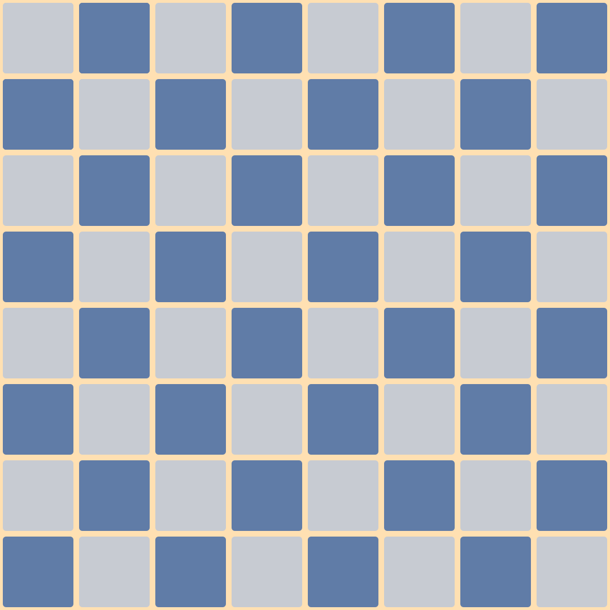

ja que lu dios
¿qué son?
Cuando tirás un dado sabés que va a salir un número del 1 al 6, pero no sabés cuál. Cuando lanzás una moneda sabés que no se va a transformar en un billete pero no podés asegurar qué cara va a quedar arriba. Incluso sabés que si tirás un vaso de vidrio al suelo se va romper en pedazos, pero no sabés exactamente en cuántos pedazos.
juegos con la luz
Uno tiende a usar la cámara de fotos para congelar la luz, para registrar un momento tal como fue. Pero a veces se puede jugar un poco (ya sea de la cámara o del sujeto fotografiado) para producir imágenes increíbles que sorprenden hasta a la persona que dispara el obturador.
juegos musicales
Si bien en el siglo XVIII era común jugar a armar piezas musicales tirando dados, fue durante el siglo XX cuando el azar se usó para componer música más seriamente. Yo lo uso para construir piezas musicales a través de juegos para los que no tenés que saber música.
con la computadora
La computadora puede generar números aleatorios y puede hacer muchas cosas más. Así que puede ser una increíble herramienta para usar el azar creativamente. Podés transformar una foto en un sonido, podés mezclar miles de imágenes en una, podés simular una epidemia y hacer que un montón de archivos de audio se contagien unos a otros.
para probar y aprender
En el verano de 2021 tuve la oportunidad de dar un taller sobre el azar y su relación con el arte en el Museo de Arte Moderno de Buenos Aires. De hecho este espacio surgió en parte gracias a esa propuesta. Podés acceder al sitio que acompañó ese taller para leer un poco más.
para saber más
Mi nombre es Rodrigo. Si tenés dudas, sugerencias o querés saber más de alguna de las cosas que comparto acá podés escribirme (también me encontrás en telegram o mastodon).
¡No te olvides de mirar el resto de mis juegos musicales!